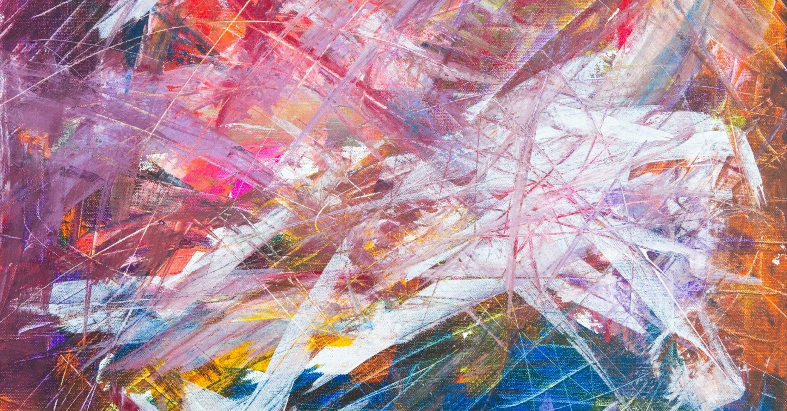

時折、「自由とは何だろう？」と思い耽ることがある。
言葉とは、その意味通りに当てはめようとすればするほど、一向に答えが見つからないことがある。
そんな体験をしている最中は、不思議でたまらない。まるで、「考えたってわからないのだから、“不思議”という言葉があるんだよ」と、声なき声に諭されるかのような感覚で。
自由の扱い方が未だわからず仕舞いの僕にとって、誰にも気を遣わずありのままでいられる場所。それは文章を書いている時だ。言葉の海を泳いでいる時だけ、その瞬間だけは誰の目も気にせず、心から自由を謳歌できている。
別に空で例えてもよかったのだが、ここだけの話、僕はカナヅチでもあるから海を使って表現してみた。いや、表現してみたかったと言った方が正しいのかもしれない。
現実では実に多くの制限やルールがあるし、それらが不特定多数をうまく扱える貴重な代物であることは知っているつもりだ。しかし、それらが悪い影響を及ぼし、心穏やかになれない場面に発展してしまう光景を幾度となく目撃してきた。
それは身の回りでの些細なやり取りはもちろん、大国間の政治問題、それぞれが正義だと主張する大物同士のスキャンダルなど、恐らく今日も世界中の様々な場面で繰り広げられているのだろう。
それは別に表立ったものに限らない。少しでも優秀な学歴をつけ、なるたけ大きな会社で働く。やがて結婚し家族を築く。そういった暗黙のルールが、社会で生きる人たちを長い間縛り続けてきた。
しかし、そうしたかつては当たり前にあった常識が、良くも悪くも“多様性”という汎用性の高い言葉の登場で、昨今崩れかかっているように思える。一見良い流れに傾いているようにも見えるが、僕にはまだその全容は掴みきれていない。
上述した、昔から暗黙化されたルールが「できない」のではなく「しない」という人たちは、それと引き換えに自らの叶えたい夢や希望を目指していく。
その様は「これこそが、僕の・私の、かけがえのない“自由の象徴”なのだ」と、皆々がその旗をはためかせているようでもある。
「ずっと、人は自由を渇望している。たゆまぬ努力を続けている。顔も知らない人間が作り上げた支配システムから逃れ、“思うがままにやってみたい”という気持ちをエネルギーに変えて。でも、やがて自由を手に入れても、ただ謳歌するだけでは駄目だと気づかされる。律することも必要なのだと人知れず思い至り、結局は自らにルールを課す。自由って、本当に何なんだろうね」
さっきから誰が語りかけているのかと思えば、それは“自由”以外の何者でもない。
エッセイだからといって、僕だけが滔々と語る必要もない。架空の人物や概念を登場させて、ある種、対談のような雰囲気で文章を書くのも楽しい。日に日に窮屈さが増すこの世界で、唯一自由の翼を思う存分広げられる、貴重な瞬間でもあるのだ。
「好きなようにしていい」と言われても、人はどこかで固定観念や先入観、道徳的信条を意識している。それがきっと、人を人たらしめる理由でもあるし、人間が社会的動物である何よりの証拠だといえるのかもしれない。
そう考えると、僕たちに残された余白は決して多くはない。小さな白地に何を付け足していくのか。どう色を加えるのか。
色々と頭を悩ませた末、たとえ自らに規則を設けることになっても、それが好循環を促していけたなら。そして、そんな過程にその人らしさも滲ませていければ、もしかしたら“自由”と仲良くなれるのかもと、今はそんな夢想ばかりしてしまう日々である。
それはきっと、僕たちの生き方ひとつとっても、同じことが言えそうだ。
たとえ小さくても、余白のある未来があったとしたら、果たしてそれに何を描いていきたいか。自分だけが知るその答えをこの先見つけられたなら、恐らくこんなに自由なことはないだろう。